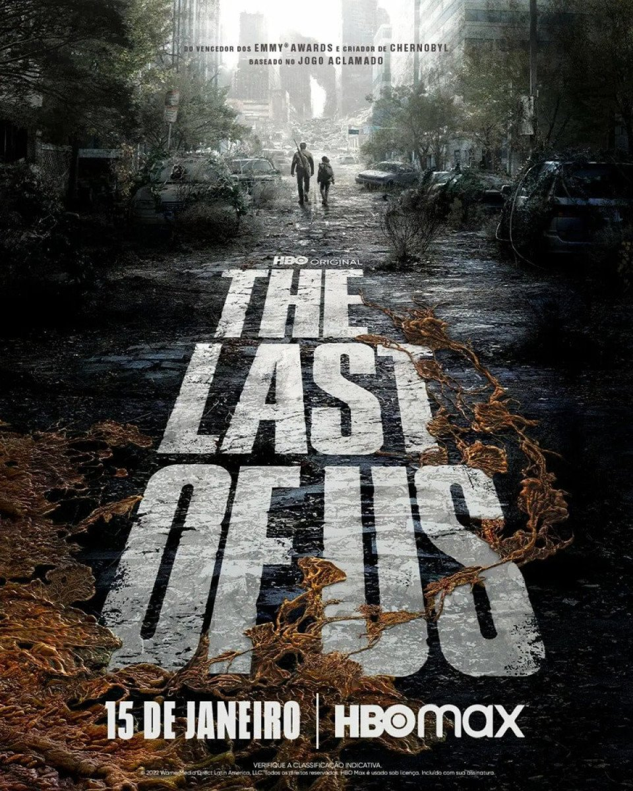
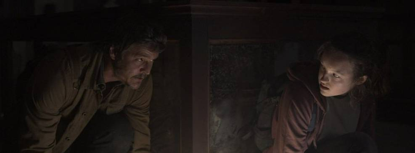
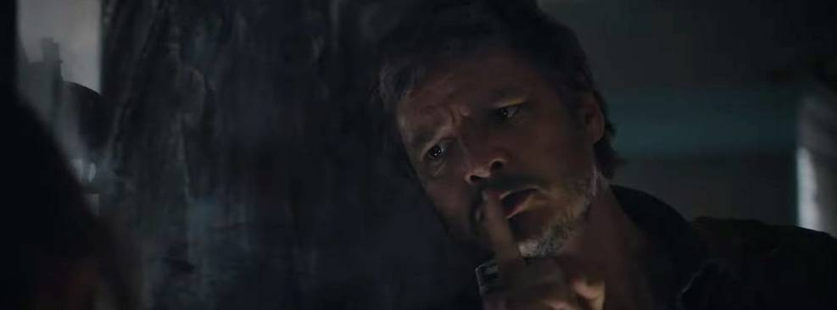

A série contará a história do que acontece vinte anos após a civilização moderna ser destruída. Joel (Pedro Pascal), um sobrevivente experiente, é contratado para contrabandear Ellie (Bella Ramsey), uma menina de 14 anos, para fora de uma zona de quarentena opressiva. O que começa como um pequeno trabalho logo se transforma em uma viagem brutal e dolorosa, pois os dois devem atravessar os EUA e dependem um do outro para sobreviver.

A produção original da HBO é estrelada por Pedro Pascal, como Joel. Na história, Bella Ramsey interpretará Ellie, Gabriel Luna será Tommy, enquanto Anna Torv será Tess. Também estão no elenco Nico Parker como Sarah, Murray Bartlett como Frank e Nick Offerman como Bill.
Storm Reid será Riley, Merle Dandridge será Marlene, Jeffrey Pierce será Perry, Lamar Johnson será Henry e Keivonn Woodard será Sam. Além disso, a produção também contará com as participações de Graham Greene como Marlon, Elaine Miles como Florence, Ashley Johnson e Troy Baker.

No game da Naughty Dog, 26 de setembro de 2013 marca o momento em que a infecção do fungo Cordyceps se espalhou massivamente pelas cidades dos Estados Unidos, dando início ao caos generalizado que quase levou a humanidade à extinção.
Na série, o surto acontece em 2003, segundo Neil Druckman, a justificativa seria para "tornar a história mais real", disse ele para o TechRadar. A narrativa principal acontecerá vinte anos depois, em 2023 - nossa época atual.